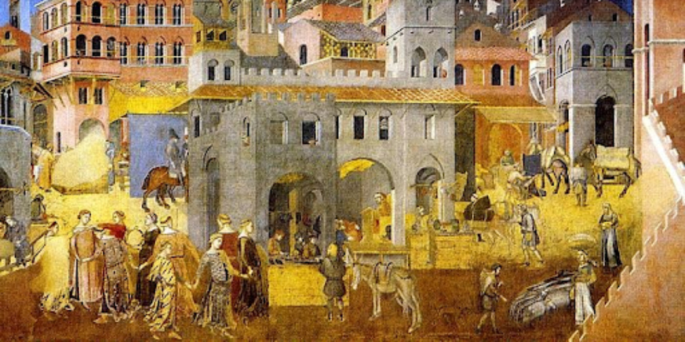
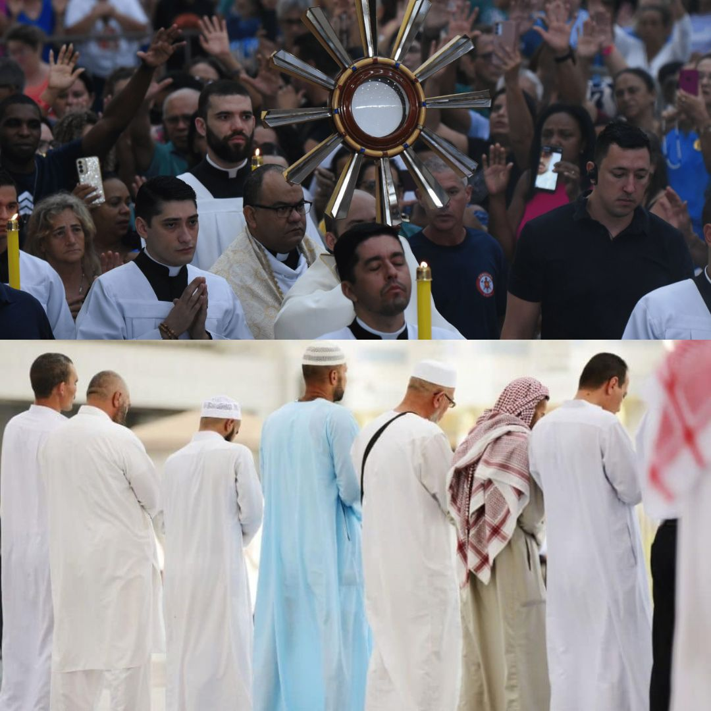
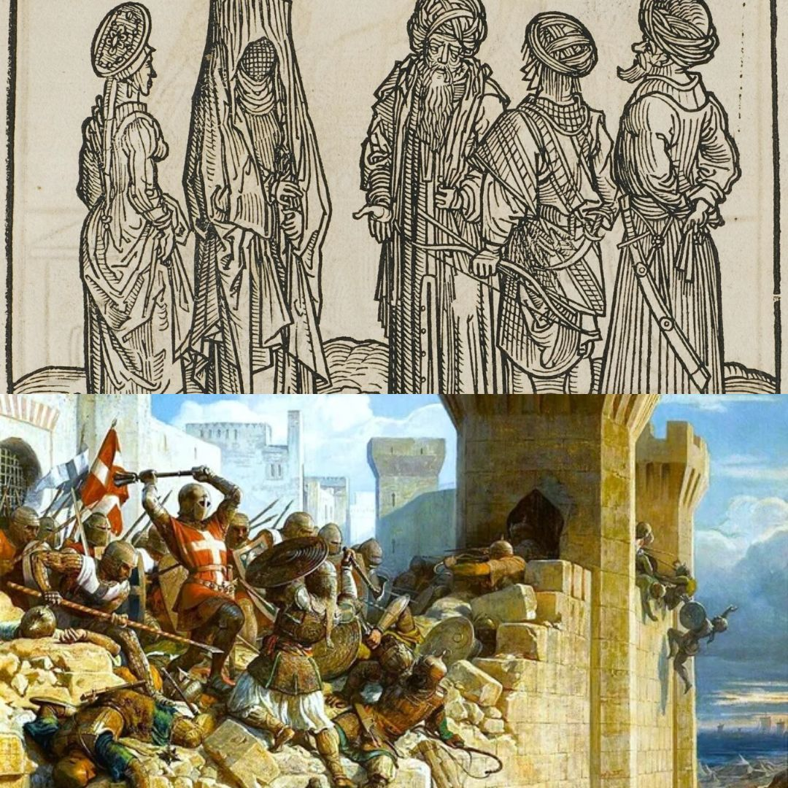
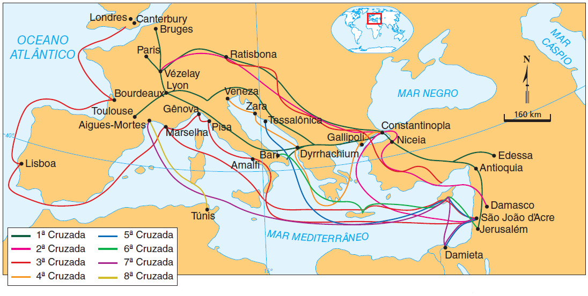
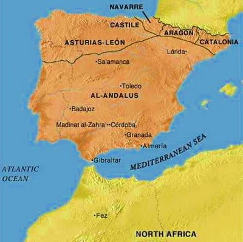

Cristãos, Muçulmanos e os Conflitos Étnico-Religiosos no Medievo
Disciplina: História
Data: 29/09/2026
Docente: André Gustavo Barbosa da Paz Mendes
Discentes:
Benício de Freitas Soares | Emanoel Silva Lopes | João Henrique Umbelino da Silva
Jonathan Conceição de Oliveira | Samuel Pedro Valdevino Soares | Suel Richard Silva França
Introdução
Além de guerras e reis: o cotidiano e o indivíduo no medievo.
A Religião como Estrutura do Cotidiano
- Não era uma escolha pessoal, mas a organização total da vida em sociedade.
- Ditava costumes, alimentação, casamento, leis e a percepção do mundo (Schmitt, 1988).
- A convivência diária gerava uma dinâmica dupla: troca cultural e comércio, mas também estranhamento e tensão (Cardini, 2000).

Contexto Histórico
A formação das identidades: Cristandade e Ummah.

Dois Mundos, Uma Estrutura
- A Cristandade: O tempo era marcado pelos sinos e pelo calendário litúrgico. A identidade oferecia segurança e sentido de salvação (Le Goff).
- A Ummah: A comunidade global de fiéis islâmica, regulada pela Sharia, com desenvolvimento urbano, científico e comercial.
- O "Outro": Em áreas de fronteira (como Al-Andalus), a visão era moldada pelo comércio e vizinhança. No interior isolado, pelo estranhamento e sermões.
Conflitos e Contatos
A diferença sem o conflito inevitável.
Fronteiras do "Nós" e do "Eles"

- Visão Cristã: Muçulmanos vistos como "sarracenos", "mouros" ou infiéis, seguidores de um falso profeta.
- Visão Islâmica: Latinos chamados de "francos" (ifranj), vistos como guerreiros corajosos, mas rústicos e atrasados (Usama ibn Munqidh).
- A Convivência: Apesar das fronteiras religiosas, a Convivencia (Castro, 1948) mostrou séculos de influência mútua na língua, arquitetura e comércio (Menocal, 2002).
As Cruzadas
Causas, acontecimentos e múltiplas perspectivas.
Por Que Aconteceram?
Não foi apenas "cristãos contra muçulmanos". Um movimento complexo com múltiplas motivações.

⛪ Religião
Jerusalém como centro sagrado. A Cruzada como peregrinação, penitência e guerra santa com indulgências.
👑 Política
Fortalecimento da autoridade papal e oportunidades de nobres conquistarem territórios e poder.
💰 Economia
Expansão das cidades comerciais italianas (Veneza, Gênova) e abertura de novas rotas no Mediterrâneo.
⚔️ Social
Canalização da violência da nobreza guerreira europeia para uma campanha legitimada pela Igreja (Paz de Deus).
Linha do Tempo das Principais Cruzadas
Conquista de Jerusalém
Fracasso em Damasco
Ricardo vs. Saladino
Saque de Constantinopla
Um Mesmo Conflito, Múltiplas Experiências
Como diferentes grupos vivenciaram as Cruzadas?
️ O Guerreiro Cruzado
Fé, penitência, serviço militar, honra e relações de vassalagem. Enfrentava doenças, fome e combates, mas buscava salvação espiritual e oportunidades políticas.
🙏 O Peregrino
Buscava acesso aos lugares sagrados e uma experiência religiosa transformadora. A jornada era perigosa, mas vista como um ato de devoção suprema.
💰 O Comerciante
Foco em rotas comerciais, novos mercados e proteção das atividades econômicas. Cidades como Veneza e Gênova lucraram imensamente com a logística e o comércio.
🏠 O Habitante Local (Muçulmano ou Cristão Oriental)
Segurança, propriedade, família e adaptação ao novo governo. Enfrentava cercos, saques ou, em tempos de trégua, negociava e convivia com os novos governantes latinos.
✡️ A Comunidade Judaica Europeia
Segurança da comunidade diante da violência. Durante a Primeira Cruzada (1096), grupos de cruzados atacaram comunidades judaicas no Reno, causando mortes e conversões forçadas.
Península Ibérica
Conflito, coexistência e intercâmbio cultural em Al-Andalus.
Al-Andalus: Entre a Guerra e a Troca
- A partir de 711, a Península Ibérica foi governada por muçulmanos, criando um espaço de cristãos, muçulmanos e judeus.
- Convivência não é igualdade: Existiam diferenças jurídicas (como o estatuto de dhimmi) e restrições, mas também intenso comércio e circulação de conhecimentos.
- A "Reconquista" pelos reinos cristãos do norte foi um processo longo. Populações muçulmanas (mudéjares) e judaicas frequentemente permaneciam nos territórios conquistados.
- A situação era dinâmica: períodos de tolerância e cooperação alternavam com perseguições, conversões forçadas e expulsões (especialmente a partir de 1492).

Conclusão
Além de "Cristãos contra Muçulmanos".

A Complexidade do Indivíduo Medieval
"Ser cristão ou muçulmano era viver uma identidade religiosa dentro de uma sociedade que envolvia família, cultura, comunidade, território e política."
Não foram apenas grandes batalhas. Foram séculos de negociações, alianças cruzadas, trocas culturais e tensões vividas por pessoas reais em seu cotidiano. A História nos convida a compreender essa complexidade sem julgá-la com os valores de hoje.
Referências Bibliográficas
- CARDINI, Franco. Nós e o Islão: História de um Mal-Entendido. Lisboa: Editorial Estampa, 2000.
- CASTRO, Américo. España en su historia. Buenos Aires: Editorial Losada, 1948.
- LE GOFF, Jacques. A Civilização do Ocidente Medieval. Lisboa: Estampa, 1983.
- MAALOUF, Amin. As Cruzadas Vistas pelos Árabes. São Paulo: Brasiliense, 1988.
- MENOCAL, María Rosa. O Ornamento do Mundo. Rio de Janeiro: Record, 2004.
- SCHMITT, Jean-Claude. A Religiosidade Popular na Idade Média. São Paulo: Brasiliense, 1988.
- BRONSTEIN, Judith. Everyday life in the Frankish East. In: The Cambridge History of the Crusades.
- THE METROPOLITAN MUSEUM OF ART. France, 1000–1400 A.D. Heilbrunn Timeline of Art History.